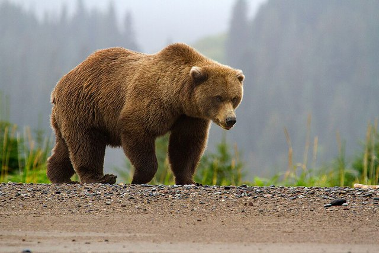

棕熊（Ursus arctos）原产于欧亚大陆北部和北美洲的部分地区。它目前的保护等级是无危。
更多...
棕熊并不总是纯棕色，有些偏红，有些偏黄。它们长着又大又弯的爪子和宽大的脚掌。雄性棕熊通常比雌性大 30%。从头到脚，体长在 5 到 9 英尺之间（约 1.5 到 2.7 米）。
一些棕熊种群较少的国家包括亚美尼亚、白俄罗斯、保加利亚、中国、芬兰、法国、希腊、印度、日本、尼泊尔、波兰、罗马尼亚、斯洛文尼亚、土库曼斯坦和乌兹别克斯坦。
